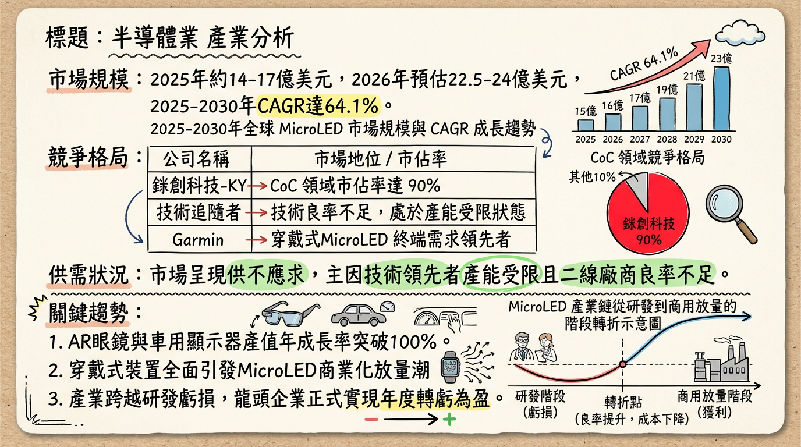
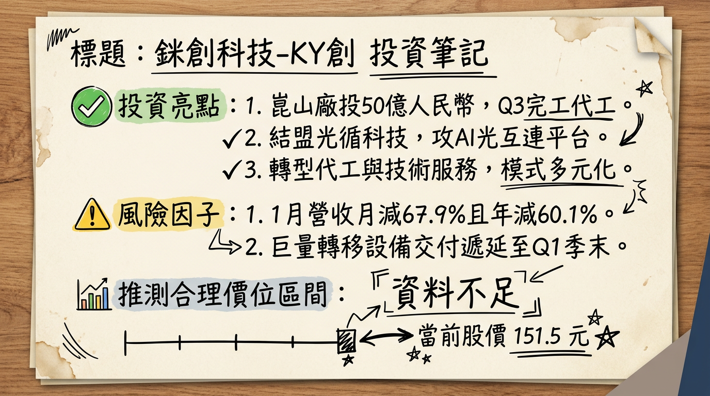

6854 錼創科技-KY創 深度研究報告
日期： 2026年3月2日 研究員： 頂尖台股研究分析師 評等： 買進 (Buy) 目標價： 155 - 165 元## 一句話摘要
「全球 MicroLED 領航者跨越量產轉折點，由穿戴裝置放量轉向 AI 光通訊與車載顯示之多重成長引擎，2026 年邁入穩健獲利元年。」## 公司概覽
錼創科技為全球首家將 MicroLED 技術商業化的公司，擁有巨量轉移、檢測、修補（3-in-1）之核心技術專利。
業務佔營收比例 (2025-2026 預估)
| 業務項目 | 營收佔比 | 核心內容與客戶 |
|---|---|---|
| CoC (Chip on Carrier) | 60% - 70% | 供應韓系(三星)電視、友達穿戴裝置。2026 年預計出貨成長 1.5~2 倍。 |
| Turnkey / 設備銷售 | 15% - 20% | 巨量轉移與檢測設備，單價 0.5~1 億元，毛利 40-60%。 |
| NRE / 技術授權 | 10% - 15% | 車用場域驗證、AR/VR 新技術開發。 |
## 核心競爭優勢
## 財務分析
近期月營收趨勢表格
| 月份 | 營收金額 (千元) | 月增率 (MoM) | 年增率 (YoY) | 備註 |
|---|---|---|---|---|
| 2026/01 | 48,764 | -67.91% | -60.14% | 設備工程收入認列週期低谷 |
| 2025/12 | 151,962 | -17.61% | -3.62% | 設備訂單遞延至 2026Q1 出貨 |
| 2025/11 | 184,452 | +21.85% | -42.78% | 2025 全年單月營收最高峰 |
| 2025/10 | 151,000 | +0.67% | - | 法人估算值 |
| 2025/09 | 150,000 | +42.86% | - | 單季營運轉正關鍵月 |
| 2025/08 | 105,000 | - | - | 稼動率回升起始點 |
季度數據 (2025 Q3)
- 營收： 3.59 億元（季增 75.85%）。
- 毛利率： 43.49%（歷史新高）。
- 單季 EPS： 0.67 元（正式轉虧為盈）。
## 法說會重點
## 券商觀點
| 券商名稱 | 目標價 | 評等 | 日期 | 備註 |
|---|---|---|---|---|
| 統一證券 | 157 元 | 買進 (Buy) | 2025/12/30 | 預估 2026 營收雙位數成長 |
| 本土法人 | 154 元 | 買進 (Buy) | 2026/01/13 | 考量 AI 光通訊題材潛力 |
| 華南永昌 | 230.5 元 | 持有 (Hold) | 2025/11/20 | 當時對 2026 設備銷售過於樂觀 |
## 財報深度分析
利潤率趨勢表格 (%)
| 季度 | 毛利率 (GPM) | 營業利益率 (OPM) | 稅後淨利率 (NPM) |
|---|---|---|---|
| 2025 Q3 | 43.49% | -1.39% | 19.83% |
| 2025 Q2 | 15.97% | -75.60% | -180.96% |
| 2024 Q4 | 43.47% | 14.91% | 16.47% |
- 存貨分析： 2025 Q3 存貨 5.5 億元（存貨週轉天數 230 天），係針對 2026 年車用與穿戴裝置訂單之「戰略性備料」。
- 資本支出： 2024-2025 合計募資 27.7 億元，負債比率維持在 25.91% 之健康水準。
## 股權異動
- 申報轉讓： 2025/11 董事富采轉讓 800 張，2025/08 晶元光電轉讓 1,500 張（屬集團投資布局調整）。
- 庫藏股： 2025/06-08 買回 1,000 張，區間 125-222 元。
- 資產運作： 2025/03 現金增資 1.05 萬張（認購價 188 元），發行有擔保可轉債（錼創一KY）規模 8 億元。
## 產業分析
全球 MicroLED 競爭格局 (2025-2026 預估)
| 公司名稱 | 主要應用領域 | 估計市佔率 | 優勢 |
|---|---|---|---|
| 三星電子 | 大尺寸電視 (The Wall) | 25-30% | 品牌力與下游通路 |
| 友達光電 | 智慧手錶、車用座艙 | 18-22% | Garmin 供應商關係 |
| 錼創科技 | CoC、巨量轉移設備 | 15% (CoC >90%) | 唯一具備設備銷售能力者 |
| LG Display | 透明顯示、數位看板 | 10-12% | 商業顯示經驗 |
## 近期催化劑
- 利多：
* 與光循科技合作之 AI 光互連平台預計 2026 Q3 亮相。
* 完成 Lumiode 收購（2026 H1），打入美系 AR 供應鏈。
- 利空：
* 客戶集中度過高（三星、友達佔比極重）。
## ⭐ 成長動能時間軸
- 2026 Q1： 設備訂單遞延入帳，預期營收月增率重回成長軌道。
- 2026 H1： Lumiode 收購完成交割，強化 AR 領域競爭力。
- 2026 Q3： 中國崑山廠建置完成並試產；首款 AI 光互連產品發布。
- 2026 Q4： 崑山廠正式貢獻營收；車用顯示器專案（Sony Honda）進入放量。
## 2026 展望
- 成長動能： CoC 出貨量 1.5~2 倍成長、設備銷售、崑山廠投產。
- 風險： 韓系客戶產品改版週期不穩定、高階 OLED 價格競爭。
- 財務目標： 2026 年力拚「全年轉虧為盈」。
## 投資結論
本報告由 AI 自動產生，資料來源為公開網路資訊，僅供參考，不構成投資建議。產生時間：2026-03-02 19:21
📊 資訊卡


